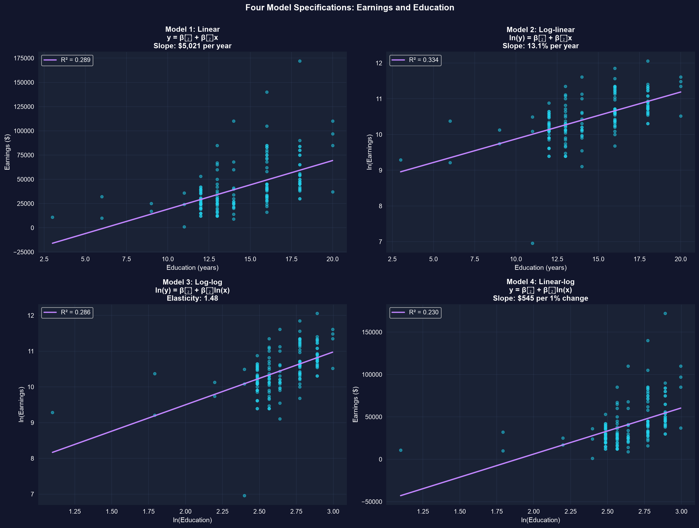
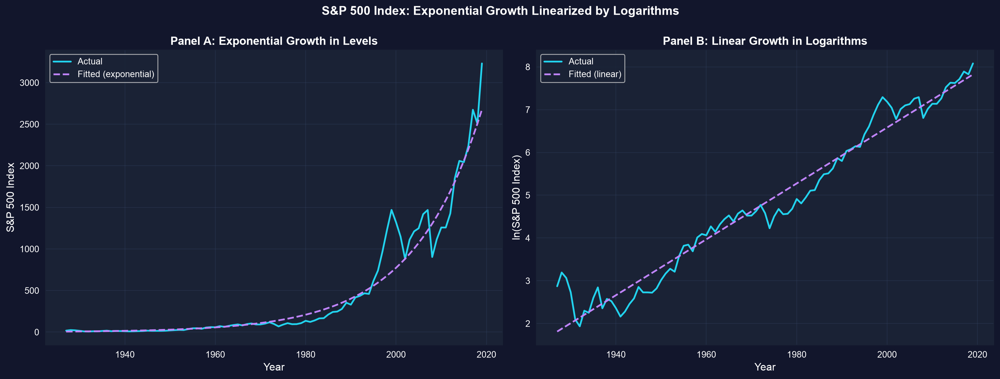

Acto I · La tensión
Un aumento de $10,000 significa cosas muy distintas con un salario de $30,000 que con uno de $300,000.
Por eso el número que normalmente queremos es un porcentaje, no una cantidad en dólares — un retorno a la educación, una elasticidad precio, una tasa de crecimiento. El logaritmo natural es la única transformación que convierte la pendiente de una regresión directamente en ese porcentaje.
pyfixestLos logaritmos permiten leer la pendiente de una sola regresión como un porcentaje — ese es todo el punto.
Acto II · La investigación
Para cambios pequeños, el cambio en \(\ln(x)\) es el cambio proporcional en \(x\) — multiplica por 100 para obtener un porcentaje.
import numpy as np # numpy → logs, exponentials, arrays
x0, x1 = 40, 40.4 # x rises from 40 to 40.4 (a 1% increase)
exact = (x1 - x0) / x0 # exact proportionate change = 0.010000
approx = np.log(x1) - np.log(x0) # log approximation Δln(x) = 0.009950
print(f"exact proportionate change: {exact:.6f} ({exact*100:.2f}%)")
print(f"log approximation Δln(x): {approx:.6f} ({approx*100:.2f}%)")
print(f"difference: {abs(exact-approx):.6f}") # tiny — the approximation is excellent for small moves| Forma | Modelo | La pendiente \(\beta_1\) se lee como |
|---|---|---|
| Lineal | \(y = \beta_0 + \beta_1 x\) | \(\Delta y\) en unidades por unidad de \(x\) |
| Log-lineal | \(\ln y = \beta_0 + \beta_1 x\) | \(100\beta_1 \approx \%\Delta y\) por unidad de \(x\) |
| Log-log | \(\ln y = \beta_0 + \beta_1 \ln x\) | $_1 = $ elasticidad (% por %) |
| Lineal-log | \(y = \beta_0 + \beta_1 \ln x\) | \(\beta_1/100 = \Delta y\) por 1% de \(x\) |
171 trabajadores a tiempo completo de 30 años (2010). Los ingresos están sesgados a la derecha (media $41,413, mediana $36,000, máx $172,000), así que la escala logarítmica recoge la cola larga. Tomamos logaritmos y ajustamos las cuatro formas con pyfixest.
!pip install -q pyfixest # pyfixest is NOT preinstalled in Colab (-q = quiet)
import pandas as pd # tabular data
import numpy as np # np.log for the transforms
import pyfixest as pf # OLS with R-style formulas
url = "https://raw.githubusercontent.com/quarcs-lab/data-open/master/AED/AED_EARNINGS.DTA"
data = pd.read_stata(url) # 171 workers: earnings, education
data["lnearn"] = np.log(data["earnings"]) # log of the outcome
data["lneduc"] = np.log(data["education"]) # log of the regressor
m_lin = pf.feols("earnings ~ education", data=data) # 1. linear: $ per year
m_loglin = pf.feols("lnearn ~ education", data=data) # 2. log-linear: semi-elasticity
m_loglog = pf.feols("lnearn ~ lneduc", data=data) # 3. log-log: elasticity
m_linlog = pf.feols("earnings ~ lneduc", data=data) # 4. linear-log: $ per 1%
print(100 * m_loglin.coef()["education"]) # 13.1 → ~13.1% more earnings per extra year
m_loglin.summary() # β0, β1, SE, t, p, R²
Cada panel ajusta una especificación. Las transformaciones logarítmicas enderezan la curvatura que el modelo lineal pasa por alto.
El log-lineal ajusta mejor entre los modelos de \(\ln\)(ingresos) (R² = 0.334); logaritmar solo \(x\) dobla la línea hacia rendimientos decrecientes.
Compara \(R^2\) solo entre modelos con la misma variable dependiente — no entre resultados en nivel y en logaritmo.
\(x_t = x_0(1+r)^t\) se curva hacia arriba en niveles, pero \(\ln(x_t) \approx \ln(x_0) + r\,t\) es lineal — así que regresar \(\ln x\) sobre el tiempo recupera la tasa de crecimiento \(r\) como la pendiente.
!pip install -q pyfixest # self-contained cell: install pyfixest (quiet)
import pandas as pd # tabular data
import pyfixest as pf # OLS with R-style formulas
url = "https://raw.githubusercontent.com/quarcs-lab/data-open/master/AED/AED_SP500INDEX.DTA"
data = pd.read_stata(url) # S&P 500 index, 1927–2019 (lnsp500 precomputed)
fit = pf.feols("lnsp500 ~ year", data=data) # slope = average annual growth rate r
r = fit.coef()["year"] # ≈ 0.065
print(f"growth rate: {100*r:.2f}% per year") # ≈ 6.5% per year
print(f"Rule of 72: doubles every {72/(100*r):.0f} years") # ≈ 11 years
La misma serie del S&P 500: una curva exponencial en niveles (izquierda), una línea casi recta en logaritmos (derecha).
Un crecimiento de 6.5% por año entre 1927–2019 → el índice se duplica aproximadamente cada 11 años (Regla del 72).
Acto III · La resolución
Objeción. “La pendiente log-lineal es 0.131, así que el retorno de un año de educación es exactamente 13.1%.”
Respuesta. \(100\beta_1\) es una aproximación que se cumple para coeficientes pequeños. Con \(\beta_1 = 0.131\) el efecto exacto es \(100\,(e^{0.131}-1) \approx 14.0\%\) — cercano, pero no idéntico. Y \(\ln\) no está definido en cero o en valores negativos, así que los logaritmos solo aplican a variables estrictamente positivas.
Reporta el valor exacto \(100(e^{\beta_1}-1)\) una vez que \(|\beta_1|\) supera alrededor de 0.10; nunca logaritmes una variable que pueda ser cero.